Music words to know
Note: a single musical tone. Pluck an open string on any guitar. That’s a note.
Melody: a series of musical notes. If you hum a familiar tune, that’s the melody.
Harmony: two or more notes played at the same time.
Chord: a harmony of three or more notes. The most common kinds of chords are major and minor
Changes or Chord Progression: a series of chords defining the harmonic structure of a song.
Key: the tonal center of a song; often (but not always!) this is the first and last chord of the song’s changes.
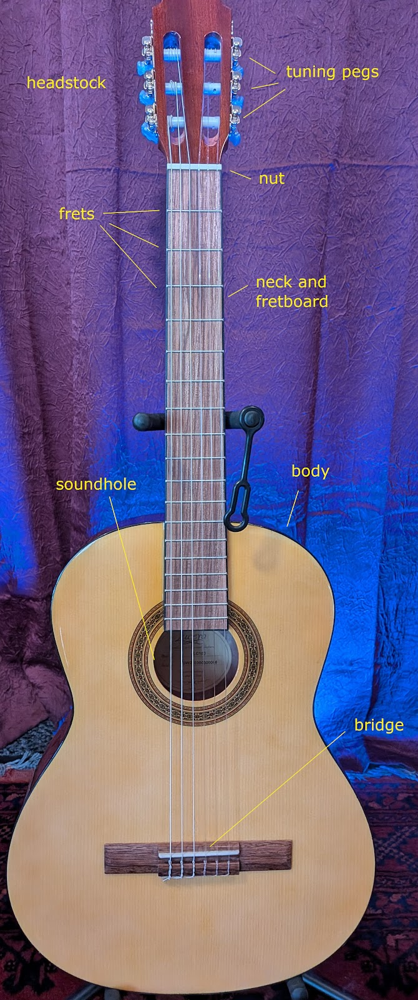
Parts of the guitar
The strings are the wires that vibrate to produce notes and chords
The headstock is home to the tuning pegs, used to adjust the pitch of the strings
The nut is where the strings cross from the headstock to the neck
The neck is faced with a fingerboard or fretboard with metal frets embedded in it
The body resonates with the strings and projects their sound through the soundhole
The bridge is where the strings attach to the body
How to hold the dang thing
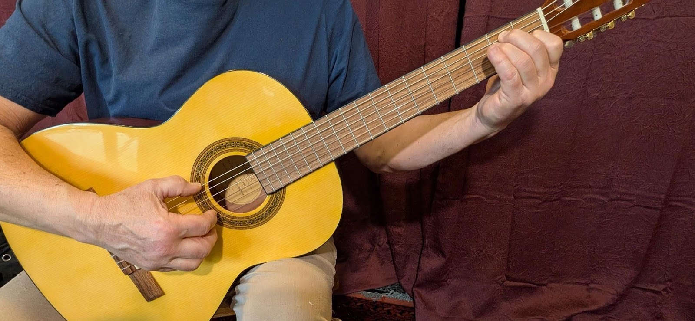
This is classical style, with the guitar body between legs, and the left leg elevated on a footrest.
You can hold it any way that’s comfortable, but make sure you keep both wrists straight and support the instrument with your right arm against your body so your left hand never has to grip or support the neck.
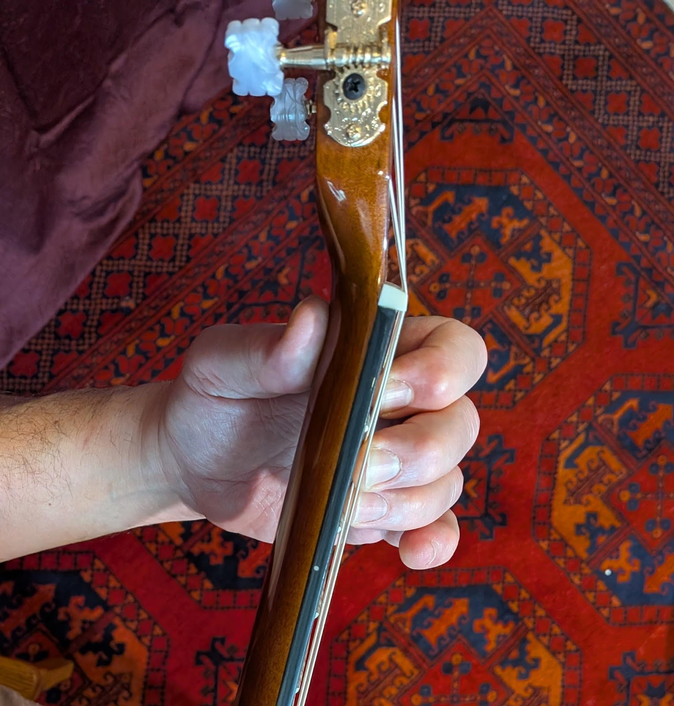
Your left thumb rests gently against the middle of the back of the neck. Relax! Don’t squeeze! Pull back with your whole arm to apply string pressure instead of squeezing with your hand.
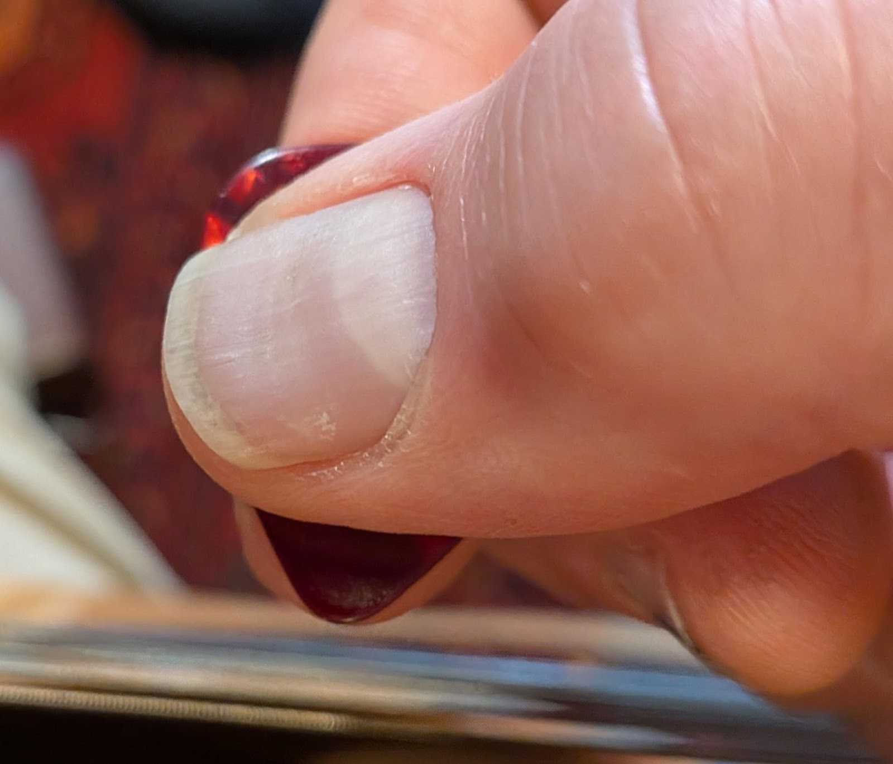
Holding a pick
Hold the pick (medium is good to start with) between your left thumb and pointer finger. No squeezing! (Do you see a theme?) For best control, just let the very tip of the pick protrude.
String, fret and finger names
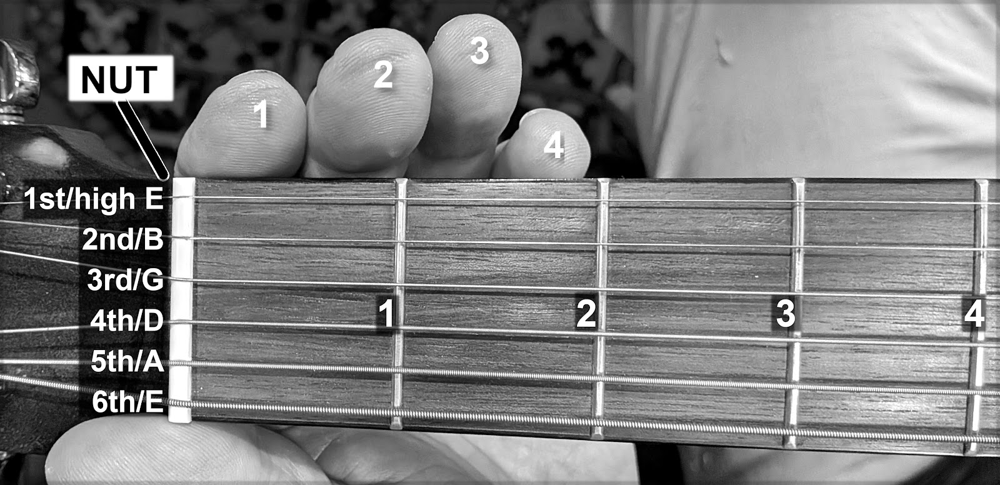
From playing position, lay the guitar on its back on your lap. The strings are numbered from the highest to lowest pitch. The highest string, the skinniest and closest to the floor while in playing position, is the 1st string, or high E.
This doesn’t make sense! I know! The “highest” string in pitch is the “lowest” in relation to the ground, and has the lowest number. Just go with it!
How to read chord symbols
Now turn that picture clockwise, and you’ll understand how to read chord symbols, like this:
String numbers
6 5 4 3 2 1
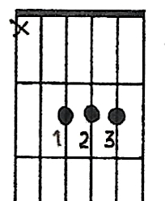
“X” = ← nut
don’t play
that string
← first fret
← fingers
← second fret
Some chords sound good together
Many songs are built around chords known as the “one” the “four” and the “five” (usually written in Roman numerals, i.e. I-IV-V7). If you learn chords in these most-simple groupings, you can be playing and writing songs faster.
A brief note on music theory, more accurately described as “harmony in the style of 18th century European composers.” Music theory is not a set of rules, but a description of classical harmonic structures. You don’t have to learn theory to play and write good songs! The only real rule is this: “if it sounds good, it is good.”
I-IV-V7 in five common guitar keys
From easier to harder. Note that a letter alone is a major chord. A letter followed by a lowercase “m” is minor chord, and a letter followed by a “7” is a seventh chord.
| I | IV | V7 |
Key of A major | A | D | E7 |
Key of D major | D | G | A7 |
Key of G major | G | C | D7 |
Key of E major | E | A | B7 |
Key of C major | C | F | G7 |
What about minor chords?
Every major key has non-major chords that sound good within it. These are known as the two, three and six minor chords (often written as lowercase roman numerals, i.e. ii, iii and vi). The vi chord is also the root of the relative minor key.
Here are some minor chords within major keys. (Chords in parentheses are not shown on the chord chart.)
| I | IV | V7 | ii | iii | vi |
D major | D | G | A7 | Em | (F#m) | (Bm) |
G major | G | C | D7 | Am | (Bm) | Em |
C major | C | F | G7 | Dm | Em | Am |
Your first chords
Don’t try to learn these all at once! The first table above has the keys in a good order. Start with A. Then D. Practice switching between A and D. Then learn E7. Practice switching between all three of these. Congrats, you’ve learned I-IV-V7 in the key of A major! Now move on to the other keys, with the minor keys as well.
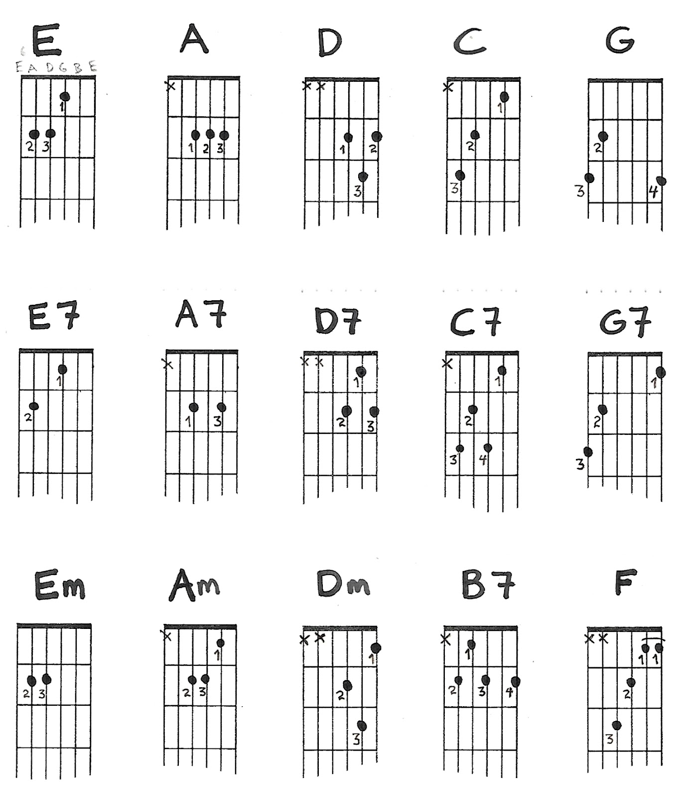
Barre chords
Barre chords are movable shapes. You play multiple strings with a single finger by making a “barre” across the strings. For “E” shape barre chords, the root is on the E string. For “A” shape barre chords, the root is on the A string.
E-shape barre chords
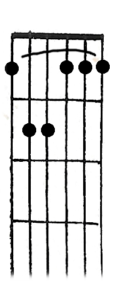
Major Seventh Minor Minor 7
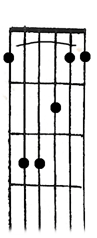
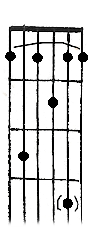
A-shape barre chords
Major Seventh Minor Minor 7 Major 7
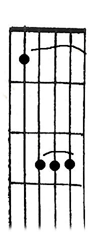
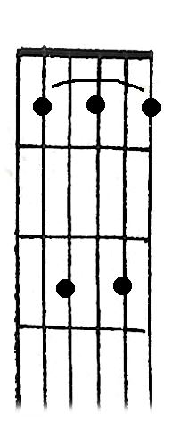
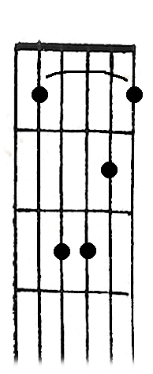
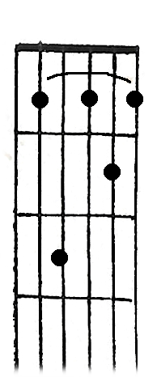
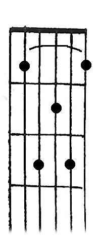
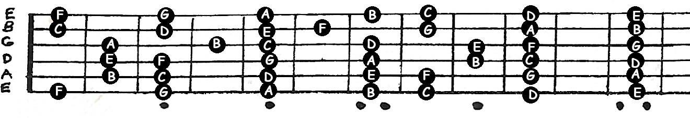
Notes on the neck
Use this as a reference when you’re
playing scale patterns and movable
chord shapes
First scales
Root notes are white. Move the scale anywhere on the neck to play in any key (see Notes on the neck above).. Play one finger per fret, so your hand stays in one position for these patterns.
Pentatonic minor/blues scale
Grey notes are added to the pentatonic minor scale to make it a blues scale. (For theory nerds: In relation to the major scale, the blues scale is 1 - flat 3 - 4 - flat 5 - 5 - flat 7.) This scale is fundamental for blues and rock soloing.
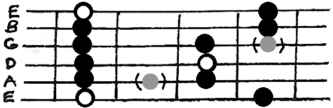
Major scale
Two octaves, with root on low E string
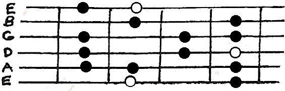
One octave with root on A string
(Note it is the same as the first part as with the root on E but moved up a string)
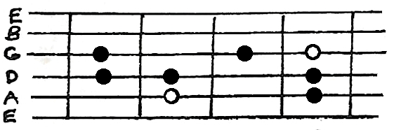